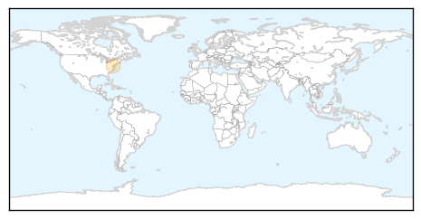
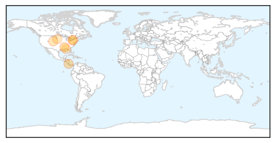
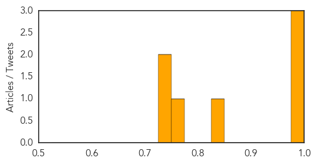

Hepatitis
30-Day Web Trend
1 alerts, 0 warnings
30-Day Twitter Trend
0 alerts, 0 warnings

Article Locations
Article Confidences

Top Articles:
Top Tweets:
-
No tweets found for Jun 18, 2014
West Nile Virus
30-Day Web Trend
5 alerts, 7 warnings

30-Day Twitter Trend
0 alerts, 0 warnings

Article Locations
Article Confidences
Top Articles:
- 0.997
- Suffolk: First bird this year tests positive for West Nile
- 0.989
- Mosquitos in 5 Colorado counties tested positive for West Nile Virus already this season
- 0.976
- Chikungunya Virus moves all the way from Kerala, to the Caribbean, and now the US
- 0.848
- Precautions urged as mosquito season revs up
- 0.769
- Chadrad.com
- 0.732
- More Mosquitoes, More Disease: Protect Horses & Other Animals
- 0.732
- Another mosquito-borne virus heads toward U.S., possibly Texas
Top Tweets:
-
No tweets found for Jun 18, 2014